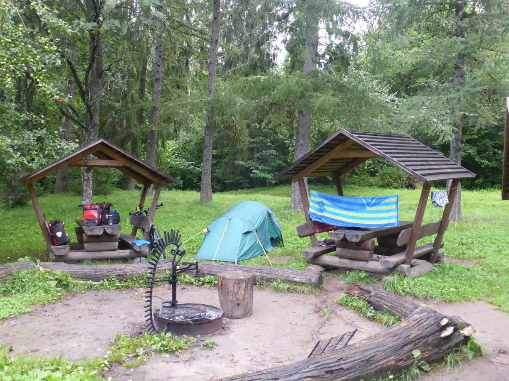
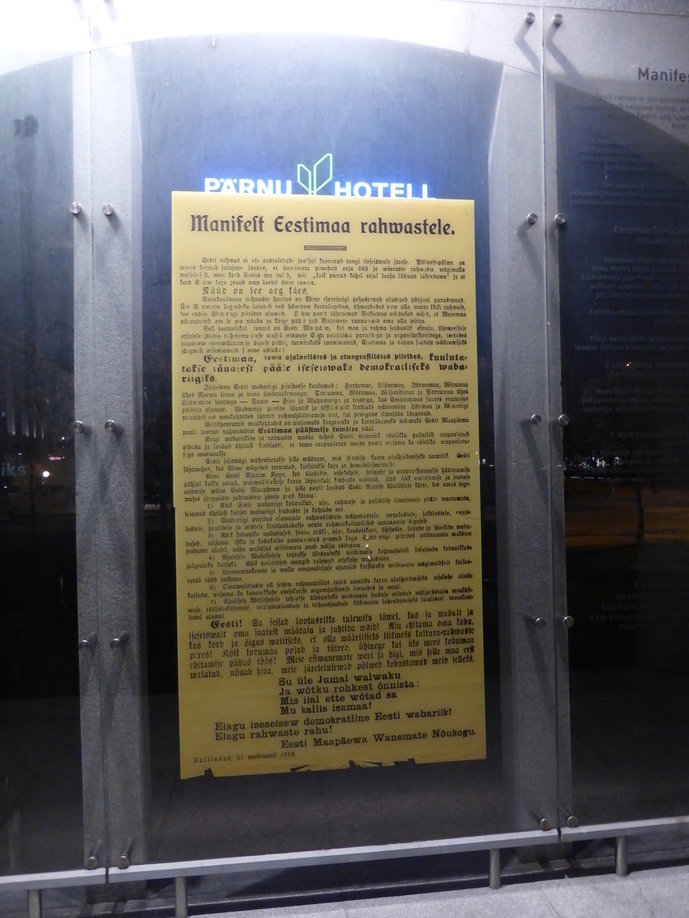

Eesti Posted on August 27, 2016
Tag 72
Sankt Petersburg - Lopukhinka 99 km
Zunächst musste ich wieder aus der Stadt raus. Dies war bei einer Stadt dieser Größe keine leichte Übung. Dank Vasiliys Route war dies jedoch kein Problem und nach gut 40 Kilometern war es dann geschafft.
Vom Stadtrand an fuhr ich zunächst entlang einer größeren Straße, die zur estnischen Grenze führte. Am späten Nachmittag entschied ich mich, einer kleineren Straße zu folgen. Dies bedeutete zwar einen kleinen Umweg, allerdings war die Strecke schöner und weniger befahren. Mein Weg führte mich durch ein paar russische Dörfer und an vielen Feldern und Wäldern vorbei. In einem dieser Wälder fand ich schließlich ein nettes Plätzchen für mein Zelt. 
Tag 73
Lopukhinka - Laagna (Estland) 124 km
Am nächsten Morgen ging es zunächst weiter über die Nebenstrecke. Wie schon am Vortag gab es wieder ein paar Kirchenruinen. Ein starker Kontrast zu den pompösen Kathedralen in Sankt Petersburg.
Bereits 8 Kilometer vor der estnischen Grenze konnte man am Horizont den Turm der Festung auf der estnischen Seite des Flußes sehen. 
Gegenüber, auf der russischen Seite des Flußes steht natürlich auch eine Festung. Der Grenzübertritt war überraschend unkompliziert.
In Narva angekommen, hatte die Touristeninfo natürlich bereits geschlossen. Einer Karte konnte ich jedoch entnehmen, dass es an der Küste einen Campingplatz gab. Dort angekommen war jedoch nirgentwo ein Campingplatz zu sehen. Also ging es noch 6 Kilometer weiter zu einem Platz, der in meinem Navi verzeichnet war und tatsächlich existierte.
Tag 74
Laagna - Saka 61 km
Meist ging es entlang der Steilküste. Dies bedeutete schöne Aussichten und viel Gegenwind. Am Ende fand ich einen Campingplatz direkt an der Steilküste. Für gerade einmal 3,10€.
Tag 75
Saka - Neeruti 81 km
In Estland gibt es eine Vielzahl an öffentlichen Campingplätzen, wo man kostenlos zelten kann. Eine Übersicht dieser Plätze findet man auf loodusegakoos.ee. Der Platz, den ich gewählt hätte, konnte locker mit den Badeplätzen in Schweden mithalten. Endlich konnte ich wieder ein erfrischendes Bad im See nehmen. 
Tag 76
Neeruti - Tallinn 106 km

Kurz vor Tallinn hörte plötzlich der Radweg auf. Über Umwege schaffte ich es dann doch noch zum Campingplatz. Dieser war zwar recht teuer, aber Alternativen gab es keine und am Horizont kündigte sich bereits Regen an. Auf dem Platz waren noch einige weitere Radreisende. So auch Armin, der zufölligerweise in die Gegenrichtung unterwegs war. Zunächst hatten wir verabredet, am Abend noch in die Stadt zu Radeln. Daraus wurde allerdings nichts, da es wieder begonnen hatte zu Regnen. Also verbrachten wir einen netten Abend unterm Vordach der Rezeption zusammen mit Armins Zeltnachbarin.
Tag 77
Tallinn - Raikküla 74 km
Am nächsten Morgen holten wir den Ausflug in die Altstadt nach. Diese war sehr schön aber leider auch sehr überlaufen. Nach kurzer Zeit wurde mir das Gedränge zu viel und ich machte mich wieder auf den Weg, Zunächst zurück zum Campingplatz, wo ich mein Gepäck gelagert hatte, und anschließend Richtung Süden. 
Nach einiger Sucherei fand ich am Abend ein nettes Plätzchen in einem Waldstück.
Tag 78
Raikküla - Pärnu 90 km
Am Morgen wurde ich durch Regen geweckt. Als dieser schließlich aufhörte packte ich schnell meinen Krempel zusammen und machte mich auf den Weg. Sobald ich aus dem Wald war fing es wieder an zu Regnen.
Als ich in Pärnu ankam war ich komplett durchnässt. Aber immerhin hatte der Regen aufgehört, als ich mein Zelt auf dem Campingplatz aufbaute. Kurze Zeit später kam ein weiterer Radreisender an. Sein Name war Andreas und er war ebenfalls in die Gegenrichtung unterwegs. Am Abend sind wir noch gemeinsam in die Stadt geradelt. 